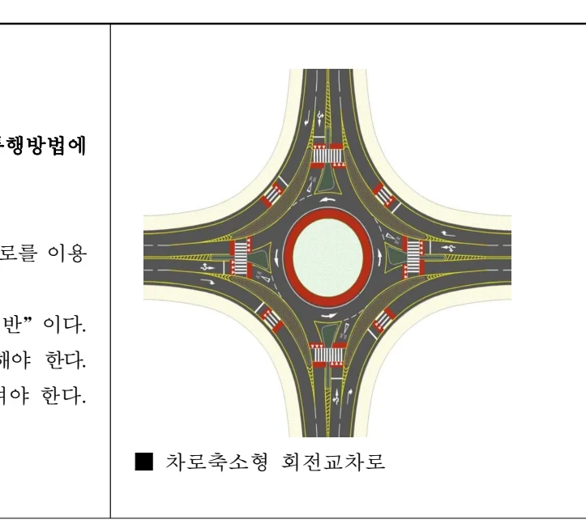

796. 在如下照片中所示的“车道减少型环形交叉口”内，关于右转行驶方法的说明中正确的两项是？

- ①驶入环形交叉口后，右转驶离。
- ②不驶入环形交叉口内，而是提前在右侧路边的车道慢行右转。
- ③驶入环形交叉口后立即右转时，属于“违反交叉路口通行方法”。
- ④无论右转车道的人行横道上是否有行人，都必须停车等待。
- ⑤驶入环形交叉口后，必须顺时针绕一大圈再右转。
查看答案
答案
② 不驶入环形交叉口内，而是提前在右侧路边的车道慢行右转。
③ 驶入环形交叉口后立即右转时，属于“违反交叉路口通行方法”。
依据
* 道路交通法第 25 条（交叉路口的通过方法） * 环岛设计准则 2.2（环岛型）“车道缩减型环岛” - 车道缩减型环岛：区分右转车辆和直行和左转车辆的行驶，在环岛内不发生车道变更的类型 - 螺旋环岛：在环岛内右转车道的移动被分开 -车道变更抑制双车道环岛：通过对现有环岛进行车道调整来抑制车道变更的类型。
依据文字为学习用机器翻译。